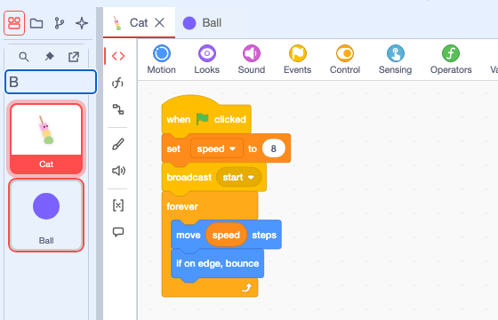
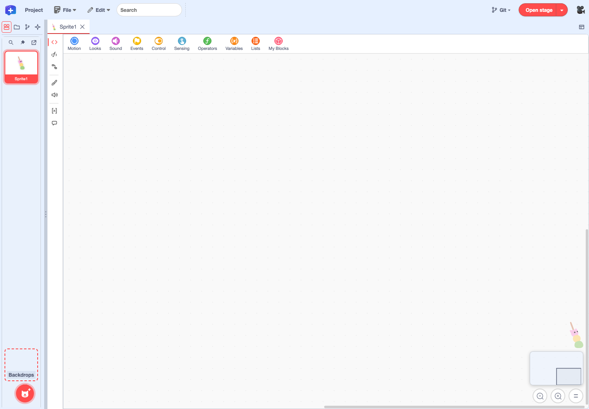
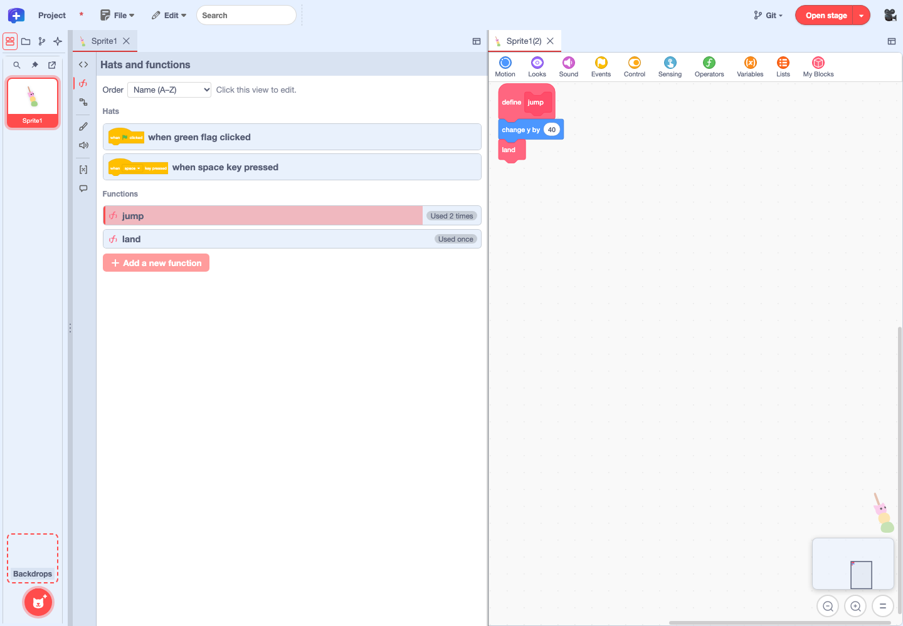
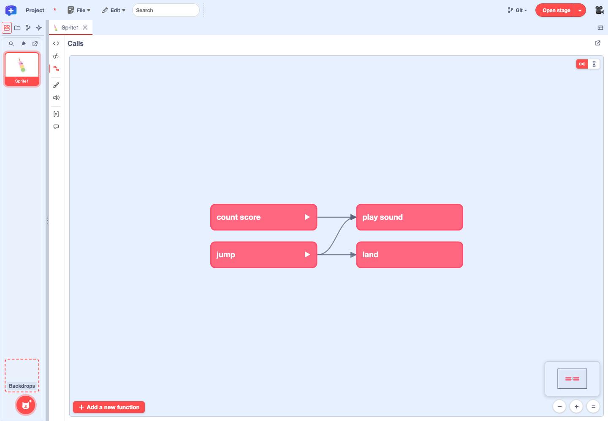
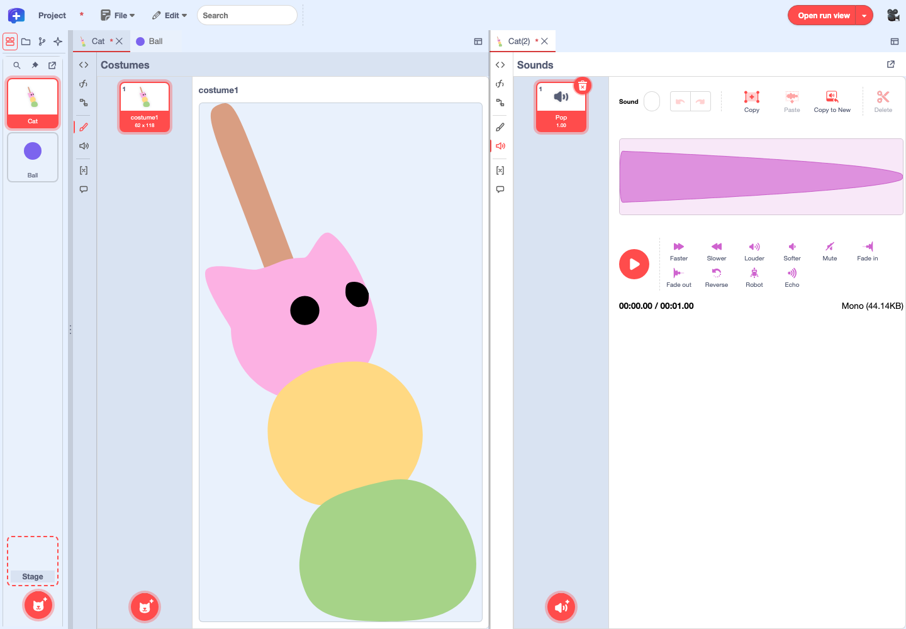
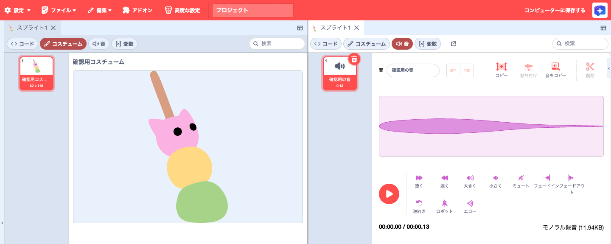
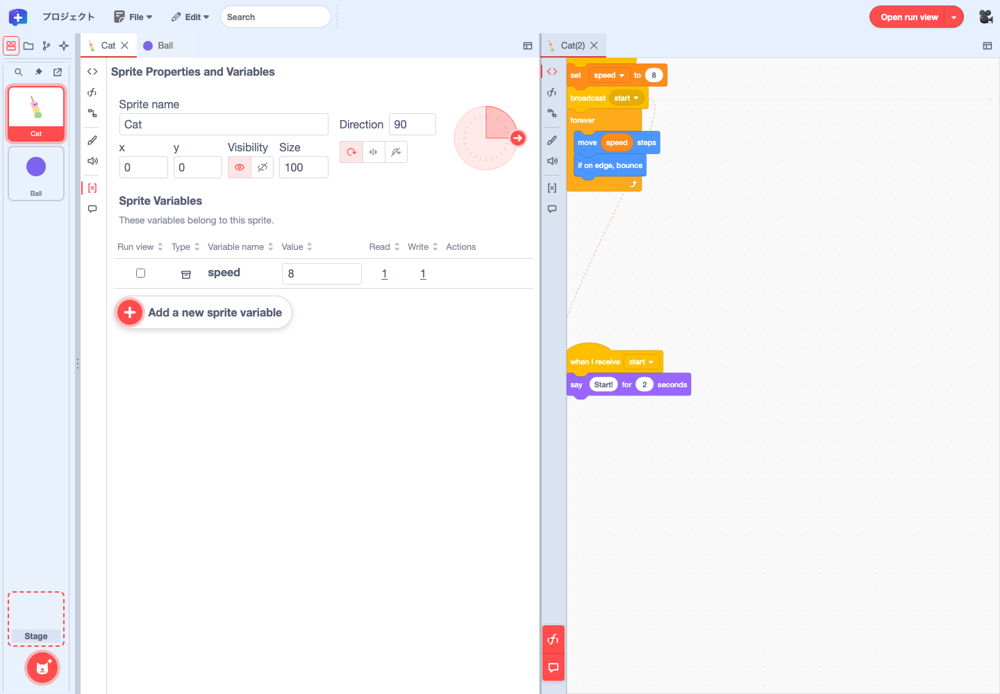
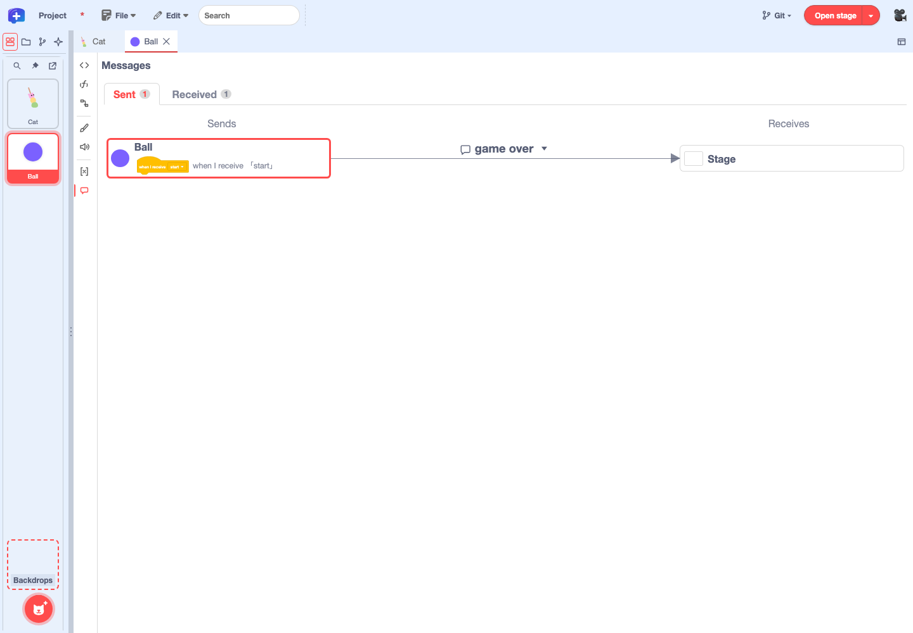
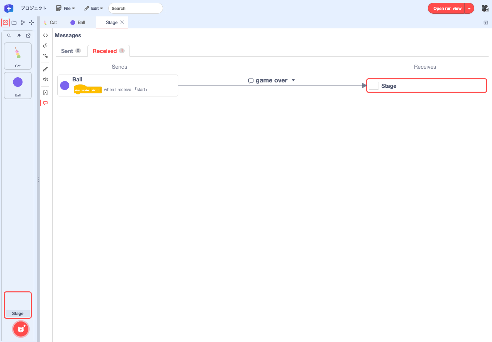

Feature guide 3/12 · Updated November 15, 2026
Edit sprites and the backdrop
Choose what to edit in the sprite list on the left, then use the icons stacked along the left edge of the editor panel to switch between the free layout of code, the list of hats and functions, the calls between functions, costumes, sounds, variables, and messages.
3.1 Find and pin sprites in the sprite list
Choose "Sprites" in the activity bar at the far left of the screen to open the sprite list, which shows a tile for each sprite. This is where you choose what to edit. At the top of the list are the "Search sprites", "Pin sprite list", and "Undock sprite list" buttons. Type part of a name into "Search sprites" to scroll to the first matching tile and highlight it with a frame. The "Backdrops" tile below the list opens the stage backdrop.

When you unpin the list with the pin button, the pin is shown with a slash and the list tucks into the left edge. Rest the pointer on the left edge or press "Reveal sprite list" to open it. While the list is pinned, widening it arranges the tiles in multiple columns. To search the whole project for blocks or assets, use the search box in the menu bar.
Right-click a sprite tile to open a menu with "Open", "duplicate", "export", "Rename sprite", "delete", and "create folder" (context menus). When the same sprite is open in more than one tab, the "Open" submenu lists the open tabs, such as "Cat" and "Cat(2)", so you can choose which tab to bring to the front (sprite tabs).
3.2 Sprite tabs and the editor panel icons
When you choose a sprite in the list, a tab for that sprite opens in the top row of the editor panel. Switch between open sprites with these tabs. Right-click a tab to choose "Open in new tab" or "Rename sprite". "Open in new tab" opens the same sprite again in a numbered tab such as "Cat(2)", so each tab can show something different (for example, code in one and costumes in the other).
Seven icons are stacked along the left edge of the editor panel, separated by lines into three groups. From the top, they are "Free layout", "Hats and functions", and "Calls"; "Costumes" ("Backdrops" for the stage) and "Sounds"; and "Variables" ("Global Variables" for the stage) and "Messages". "Free layout" is the code area that holds all of the sprite's scripts. "Hats and functions" and "Calls" are explained in List hats and functions and see their calls. The selected icon is shown with color and a line on its left. Hover over an icon to see its name.

3.3 List hats and functions and see their calls
Open "Hats and functions" to see the scripts of the open sprite or backdrop, split into "Hats" and "Functions". Each hat shows a picture of its hat block and a name such as "when space key pressed". Each function shows the name of its custom block and how often it is used, such as "Used 2 times". Named functions of the "TurboWarp-Named-Functions" extension are grouped under the heading "TurboWarp Plus named functions". Choose the order under "Order": "Name (A–Z)", "Z order (rows)", or "N order (columns)". Click the usage count to open the list of places that use the function, and pick one to go there.
Show and edit one script on its own
Pick a hat or a function in the list to split the panel to the right of the sprite and open a code area that shows only that script, in a numbered tab such as "Sprite1(2)". The other scripts are only hidden; they stay in the project. This code area has no icons along its left edge, and the block palette and context menus work as in "Free layout". Picking another item switches what the same code area shows, and the list highlights the item being shown. If you delete the script being shown, this code area closes.

"Show this function" in the context menu of a block that calls a function also opens the function in the same code area (Work with context menus). "Fold" in a hat's context menu shows a script as its hat alone.
Adding a function
Press "+ Add a new function" below the list to open a dialog for the "Function name" and its "Kind": "Standard (My Blocks)" or "TurboWarp-Plus named function". Press "Add" to create the function below the existing scripts and open it in the code area on the right. A standard function is a custom block definition with no inputs. You cannot add a function whose name is already taken. If you choose a named function and the "TurboWarp-Named-Functions" extension is not loaded, it is loaded at that point.
Seeing which function calls which
Open "Calls" to see a diagram with functions as boxes and calls as arrows. A function called from a script that is not a function, such as a hat script, is marked with ▶. Global named functions defined in other sprites or the stage also appear, with the name of the sprite or stage that defines them, when they are connected by calls.

Point at a box to highlight the arrows connected to it. Click the box of a function of the open sprite or backdrop to open that function in the code area on the right. The buttons at the top right switch the flow between "Left to right (LR)" and "Top to bottom (TD)", and the buttons at the bottom right zoom in and out. You can also add a function with "+ Add a new function" at the bottom left.
3.4 Edit costumes and sounds
Choose "Split right" from "Editor panel layout" at the top right of the tabs to open the same sprite on the right in a numbered tab (for example, "Cat(2)"). This guide calls each of the areas created by a split a pane. Choose "Costumes" on the left and "Sounds" on the right to work with costumes and sounds side by side. Selecting a sound in "Sounds" shows its waveform, and the play button below it lets you listen. If the sprite has no sounds, add one with the button at the bottom left.
Only the pane you are working in shows the full editor. The other pane shows a preview of its selected costume or sound. Interact with that pane and it switches to the editor.
Each pane remembers what it was showing and which asset was selected. Switching to another sprite or tab while recording does not close the recording dialog, and the recorded sound is saved to the sprite where the recording started.
In the costume and backdrop editors, "Fonts…" at the top lets you manage the project's fonts. Fonts you add can be chosen from the Text tool's font list in either editor.

In development In a development build (the local integration build), the costume preview in the inactive pane has a maximum height.

3.5 Edit properties, variables and lists
Open "Variables" to see the sprite's properties and its "Sprite Variables" under the heading "Sprite Properties and Variables".
- Properties: Edit the sprite name, x, y, visibility (eye icon to show, slashed eye to hide), size, direction, and rotation style (all around, left-right, or don't rotate).
- Variable list: Shows the variables and lists that belong to what is open. A sprite's "Variables" lists the sprite variables that only that sprite uses; the stage's "Global Variables" lists the global variables shared by the whole project. Cloud variables have a cloud icon to the right of the name.
- Changing values: Type a value and press Enter, or move focus out of the field, to apply it. Press Esc before applying to cancel the edit.
You can type the direction as a number or drag the arrow on the edge of the dial. Switch the rotation style with the three icons under the direction field. With "All around" the dial lets you choose any direction; with "Left-right", only left or right. With "Don't rotate", the dial is locked and you change the movement direction by typing a number.
Reviewing variables and lists in the table
The table's columns are "Stage", "Type", "Variable name", "Value", "Read", "Write", and "Actions". The "Stage" checkbox turns the value's display on the stage on or off. "Type" shows a box icon for variables and a table icon for lists. Click a column heading to sort by it.
The "Read" and "Write" columns show how many blocks read and change the variable. Click a count to open the menu-bar search filtered by "Variable access", where you can jump to the matching blocks (Search the whole project).
A list's "Value" shows its first five items, and the number of remaining items appears as, for example, "+1". Press "Edit", with the pencil icon in the "Value" column, to open the "Edit list" dialog, where you can change items, move them up or down, delete them, and use "Add item". Press "Save" to apply the changes.

Split the panel and open "Variables" in one pane and "Free layout" in the other to edit code while watching the values (splitting panels).
Editing and saving a list from the table in the Ball Demo
Creating, renaming, and deleting variables and lists
Press "Add a new sprite variable" ("Add a new global variable" for the stage) at the bottom left of the panel to open the creation dialog. Choose what to create with the "Variable" and "List" tabs at the top, enter a name, and press "Create". When creating a global variable, you can also choose "Cloud variable".
Hover over a variable's row, or focus it with the keyboard, to show the "Rename variable" and "Delete variable" buttons in the "Actions" column.
- If the name is empty or already in use, the reason is shown and you cannot confirm. A sprite variable is checked against that sprite's variables and the global variables. A global variable is checked against every sprite's variables and the global variables. Lists are checked only against other lists.
- A confirmation appears before deleting. A variable used by blocks cannot be deleted. Remove its uses first so that both the "Read" and "Write" counts are 0.
Checking values for each clone
When clones are created while the project runs, you can choose which one to show to the right of the "Sprite Properties and Variables" heading. Up to five clones can be picked directly by number; with six or more, move with the left and right arrows or pick a number from the list in the middle. You can edit the selected clone's position, direction, size, visibility, and rotation style, and the values of its sprite variables. The sprite name is read-only. Changes to properties and values last only for that run, and if the selected clone disappears, the pane returns to the original sprite.
While a clone is selected, the "Read" and "Write" counts still come from the original sprite's code, and you can search for uses from the counts. Adding, renaming, or deleting a variable applies to the original sprite and all of its clones. Turning on display on the stage shows the original sprite's value.
Checking temporary variables
When the Temporary Variables extension is loaded or its blocks are used, a "Thread Variables" table is added below the variable list. The stage's "Global Variables" also gets a "Runtime Variables" table. The tables list the variables whose names are written as fixed text in the code, with the functions that set them ("Defined in"). For runtime variables, the functions that read them ("Read in") and that change them ("Changed in") are also listed, with counts.
Values appear in the "Value" column while the project is paused with the debugger. Each thread variable value shows which sprite (or clone) and which thread it belongs to. Click a function name or a hat picture to show that function or script in the middle of the code.
3.6 Check who sends and receives messages
Open "Messages", below "Variables", to see the messages the open sprite or backdrop sends and receives, on two tabs, "Sent" and "Received". The number on each tab is how many messages it covers. For a sprite or backdrop that only receives messages, the "Received" tab opens first.
Both tabs show a diagram. For each message, an arrow runs from "Sends" on the left to "Receives" on the right, with sprite and stage thumbnails at each end. The message name appears next to the speech-bubble icon above the arrow. The open sprite or backdrop has a thick frame in the accent color.


- A sender shows a small drawing of the hat of each script that sends the message, with words saying where the script begins, such as "when green flag clicked". Click it (its tooltip is "Open this block") to move the code to that script's sending block.
- Click the name of a sprite or the stage to open its code.
- A message with no receiving block shows "No receivers" on the receiving side, and a message with no sending block shows "Never sent" on the sending side, each with a warning mark.
Renaming a message
Press the ▼ to the right of a message name in the diagram and choose "Rename message" to change the name in a dialog. Messages are shared across the whole project, so renaming one changes how it appears in every block that sends or receives it. You cannot rename a message to a name that is already in use.
When you search the whole project for a message name, sending and receiving are classified the same way as in this panel (Choose what to search).
3.7 Edit the backdrop
Choose the "Backdrops" tile below the sprite list to open the editor panel for the stage. Like the tile, its tab is labeled "Backdrops".
The icons along the left edge of the editor panel are in the same order as for sprites, except that "Backdrops" replaces "Costumes" and "Global Variables" replaces "Variables". Edit the stage's backdrop images in "Backdrops", its scripts in "Free layout", and its sounds in "Sounds". "Global Variables" lists the variables and lists used by the whole project, and the diagram in "Messages" shows all sending and receiving in the project (Check who sends and receives messages).
Right-click the backdrop tile to choose "Open" or "Export Stage". "Export Stage" exports the stage as a .stage3 file (Transfer scripts and the stage to another project).